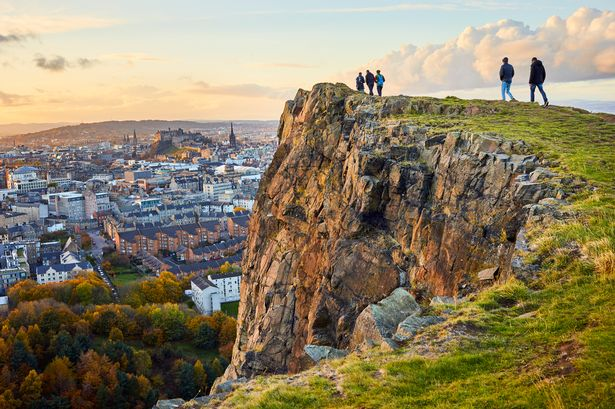

Hello! There are lots of Museums to visit in Edinburgh. Here there is a list of our favorites with some links. Hope you enjoy it!
-

Arthur's Seat
Best for: Views, walking
Location: Edinburgh, Scotland
Arthur's Seat is an extinct volcano which is the main peak of the group of hills in Edinburgh, Scotland, which form most of Holyrood Park, described by Robert Louis Stevenson as "a hill for magnitude, a mountain in virtue of its bold design".
-
Scottish National Gallery
Best for: Art
Location: The Mound, Edinburgh EH2 2EL
The Scottish National Gallery is the national art gallery of Scotland. It is located on The Mound in central Edinburgh, close to Princes Street. The building was designed in a neoclassical style by William Henry Playfair, and first opened to the public in 1859.
-

National Museum of Scotland
Best for: History, Science
Location: Chambers Street, Edinburgh, EH1 1JF
Two strands of history come together in the story of the development of the National Museums Scotland: the desire to have a museum reflecting Scottish history and the wish to have a museum demonstrating international cultures, natural and physical sciences, and decorative art for Scotland. Discover our story from the 18th century beginnings to the present day.
-

Portobello Beach
Best for: Walks
Location: 1 Promenade, Portobello, Edinburgh EH15 2DX
Traditional seaside pursuits on the prom with sandy stretches of beach overlooking the Forth.